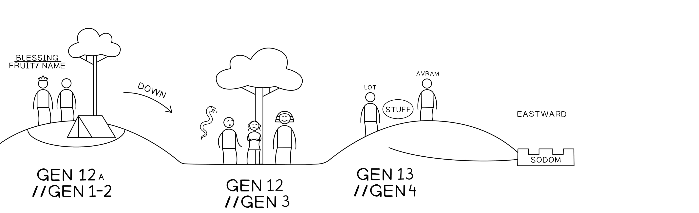

Gênesis 13:1-4. Tradução e Design Literário por Tim Mackie para BibleProject Classroom: Abraham (2021).Genesis 13:1-4. Translation and Literary Design by Tim Mackie for BibleProject Classroom: Abraham (2021).
A cena se abre com a subida de Abrão (literalmente “ele subiu” [עלה] do Egito com muita riqueza. Múltiplos elos de volta a 12:5-9 nos mostram que a libertação de Iavé o restaurou à sua posição anterior.The scene opens with Avram’s ascent (literally “he went up” [עלה] from Egypt with much wealth. Multiple links back to 12:5-9 show us that Yahweh’s deliverance has restored him to his former estate.
Gênesis 12:5, 8-9 (Gênesis 12:5)Genesis 12:5, 8-9 (Genesis 12:5)Tradução do InstrutorInstructor’s Translation
55E Abrão tomou Sarai, sua esposa,And Avram took Sarai his wife,
e Ló, filho de seu irmão,and Lot the son of his brother,
e todos os bens que haviam adquirido …and all the possessions they came to possess …
e foram para a terra de Canaã.and they went to the land of Canaan.
88E ele mudou-se de lá [ויעתק]And he moved on [ויעתק] from there
para o monte que fica a leste de Bet-Elto the hill from the east of Beth-El
e armou a sua tenda:and he spread out his tent
Bet-El a oesteBeth-El on the west
e Ai a leste;and Ai from the East
e edificou ali um altar a Iavéand he built there an altar to Yahweh
e ele invocou o nome de Iavé.and he called upon the name of Yahweh.
99E Abrão partiu [ויסע],And Avram journeyed [ויסע],
viajando continuamente [נסוע] para o Neguebe.continually journeying [נסוע] to the Negev.
Gênesis 13:1, 3-4 (Gênesis 13:1)Genesis 13:1, 3-4 (Genesis 13:1)Tradução do InstrutorInstructor’s Translation
11E Abrão subiu do Egito,And Avram went up out of Egypt,
ele e sua esposa,he and his wife,
e tudo o que lhe pertencia,and all that belonged to him,
e Ló com ele,and Lot with him,
para o Neguebe.to the Negev.
33E ele seguiu em suas jornadas desde o Neguebe,And he went on his journeys from the Negev,
até Bet-El,even unto Beth-El,
até o lugar onde estava a sua tenda antes,unto the place where his tent was there at the first,
entre Bet-El e entre Ai,between Beth-El and between Ai,
44até o lugar do altar que ele tinha edificado ali no princípio,to the place of the altar which he built there at the beginning,
e Abrão invocou ali o nome de Iavé.and Avram called there on the name of Yahweh.
A presença de Ló com a companhia de Abrão foi mencionada em 12:5, e ele permaneceu em segundo plano durante todo o 12:6-9 e 12:10-20. A problemática presença de Ló é reintroduzida aqui porque ele desempenhará o papel-chave na narrativa que se segue.Lot’s presence with Avram’s company was mentioned back in 12:5, and he remained in the background for all of 12:6-9 and 12:10-20. Lot’s problematic presence is reintroduced here because he will play the key role in the narrative to follow.
Há outra diferença fundamental entre a descida e a subida de Abrão do Egito. Abrão agora é extremamente rico, e essa riqueza, obtida por meio do seu engano ao Faraó, também desempenhará um papel importante na próxima narrativa.There is another key difference between Avram’s descent and ascent from Egypt. Avram is extremely wealthy now, and that wealth, gained from his deception of Pharaoh, is also going to play a major role in the next narrative.
Gênesis 13:5-11. Tradução e Design Literário por Tim Mackie para BibleProject Classroom: Abraham (2021).Genesis 13:5-11. Translation and Literary Design by Tim Mackie for BibleProject Classroom: Abraham (2021).
O conflito que se desenvolve entre Abrão e Ló acontece em etapas cuidadosamente marcadas na progressão do texto.The developing conflict between Avram and Lot happens in steps that are carefully marked in the text’s progression.
Somos informados de que Ló também tem muitos rebanhos, ao lado dos muitos rebanhos de Abrão. Isso leva a um problema de capacidade. A terra simplesmente não pode sustentar todo o seu gado pastando. “Ela não pode levá-los para habitarem juntos como um.”We’re told that Lot also has many herds, alongside Avram’s many herds. This leads to a problem of capacity. The land simply can’t sustain all of their grazing cattle. “It cannot carry them for dwelling together as one.”
Note a razão adicional para a incapacidade da terra de sustentar os rebanhos de Abrão e Ló: eles não são os únicos pastando o seu gado nesta terra. Os cananeus também habitam na terra. O desenho simétrico do parágrafo atrasa a informação sobre os cananeus ao mesmo tempo em que a conecta de volta à incapacidade de Ló e Abrão de viverem juntos.Notice the additional reason for the land’s inability to sustain Avram and Lot’s herds: They are not the only ones grazing their cattle in this land. The Canaanites also dwell in the land. The symmetrical design of the paragraph delays the information about the Canaanites while also linking it back up to the inability of Lot and Avram to live together.
Contudo, a incapacidade da terra não é a única razão para o conflito. Há também a questão dos seus “bens”. Há um jogo de palavras importante com a descrição dos numerosos [רב, rav] bens, que leva a uma “contenda” [ריב, riv] entre os irmãos. Especificamente, a contenda é entre os pastores de cada parte, isto é, entre aqueles que não são irmãos.However, the land’s inability isn’t the only reason for the conflict. There is also the matter of their “possessions.” There is an important wordplay with the description of the “many” [רב, rav] possessions, which leads to a “dispute” [ריב, riv] between the brothers. Specifically, the dispute is between the shepherds of each party, i.e., between those who are not brothers.
Gênesis 13:8-9Genesis 13:8-9Tradução do InstrutorInstructor’s Translation
88E Abrão disse a Ló:And Avram said to Lot,
“Não haja contenda“Don’t let there be disputing
entre mim e entre ti,between me and between you,
entre os meus pastores e entre os teus pastores,between my shepherds and between your shepherds,
pois somos homens irmãos!”for we men are brothers!”
99Não está toda a terra diante de ti?Isn’t all the land before you?
Separa-te, peço-te, de mim!Please, separate from me!
Se tu fores para a esquerda/norte, irei para a direita/sul,If you go left/north, I will go right/south,
e se tu fores para a direita/sul, irei para a esquerda/norte.”and if you go right/south, I will go left/north.”
O discurso de Abrão é uma tentativa de evitar o conflito crescente, e um sutil jogo de palavras com o parágrafo anterior mostra a ênfase da narrativa.Avram’s speech is an attempt to avoid escalating conflict, and a subtle wordplay with the preceding paragraph shows the narrative’s emphasis.
Gênesis 13:6 (Gênesis 13:6)Genesis 13:6 (Genesis 13:6)Tradução do InstrutorInstructor’s Translation
e a terra não os podia levar, para habitarem juntos como um (יחדיו), porque os seus bens eram tantos (רב), e não podiam habitar juntos como um (יחדיו)and the land could not carry them for dwelling together as one (יחדיו) because their possessions were so many (רב) and they weren’t able to dwell together as one (יחדיו)
“habitarem juntos como um” = Heb. yakhdav“dwell together as one” = Heb. yakhdav
Gênesis 13:11 (Gênesis 13:11)Genesis 13:11 (Genesis 13:11)Tradução do InstrutorInstructor’s Translation
e cada homem se separou de seu irmão (אחיו)and each man separated from his brother (אחיו)
“seu irmão” = Heb. ’akhiv“his brother” = Heb. ’akhiv
Gênesis 13:8 (Gênesis 13:8)Genesis 13:8 (Genesis 13:8)Tradução do InstrutorInstructor’s Translation
“Não haja contenda (מריבה) entre mim e entre ti, entre os meus pastores e os teus“Don’t let there be disputing (מריבה) between me and between you, between my shepherds and your
pastores, pois somos homens irmãos!” (אחים)shepherds, for we men are brothers!” (אחים)
“irmãos” = Heb. ’akhim“brothers” = Heb. ’akhim
Abrão nomeia a triste realidade de que, embora sejam irmãos, não podem habitar juntos como um por causa de seus muitos bens, que criaram ciúme, contenda e divisão. E assim a sua solução é ao mesmo tempo generosa e arriscada. Ele deixa Ló escolher primeiro as terras de pastagem.Avram names the sad reality that even though they are brothers, they are not able to dwell together as one because their many possessions have created jealousy, contention, and division. And so his solution is both generous and risky. He lets Lot have his choice of grazing lands first.
A descrição de Ló escolhendo a sua terra de pastagem ideal está cheia de hiperlinks de volta a Gênesis 1-11, e esses links ajudam o leitor a avaliar as suas ações.The depiction of Lot choosing his ideal grazing land is full of hyperlinks back to Genesis 1-11, and these links help the reader evaluate his actions.
Gênesis 13:10-11Genesis 13:10-11Tradução do InstrutorInstructor’s Translation
1010E Ló levantou os seus olhos,And Lot lifted his eyes,
e viu todo o vale do Jordão,and he saw all the valley of the Jordan,
que estava regado por completothat it was entirely watered
(isto foi antes de Iavé trazer a ruína de Sodoma e Gomorra)(this is before Yahweh caused the ruin of Sodom and Gomorrah)
semelhante ao jardim de Iavé,it was like the garden of Yahweh,
como a terra do Egitolike the land of Egypt
ao ir para Zoar.as you go to Zoar.
1111E Ló escolheu para si todo o vale do Jordão,And Lot chose for himself all the valley of the Jordan,
e Ló caminhou para o oriente,and Lot journeyed eastward,
e cada homem se separou de seu irmão.and each man separated from his brother.
Gênesis 3:6 (Gênesis 3:6)Genesis 3:6 (Genesis 3:6)Tradução do InstrutorInstructor’s Translation
E a mulher viu a árvore, que era boa para comer, que era desejável aos olhos, e ela tomou do seu fruto e comeu …And the woman saw the tree, that it was good for eating, that it was desirable to the eyes, and she took from its fruit and she ate …
Gênesis 3:24 (Gênesis 3:24)Genesis 3:24 (Genesis 3:24)Tradução do InstrutorInstructor’s Translation
E [Iavé] expulsou o humano, e colocou querubins a leste do jardim do Éden …And [Yahweh] banished the human, and stationed kheruvim at the east of the garden of Eden …
Gênesis 6:2 (Gênesis 6:2)Genesis 6:2 (Genesis 6:2)Tradução do InstrutorInstructor’s Translation
E os filhos de elohim viram a filha da humanidade, que elas eram boas, e eles tomaram para si esposas, de tudo o que escolheram.And the sons of elohim saw the daughter of humanity, that they were good, and they took for themselves wives, from all that they chose.
A decisão de Ló é apresentada em analogia à escolha tola de Eva de fazer o que era bom aos seus próprios olhos. Assim como a avaliação dela do que era bom era defeituosa e levou à morte, a escolha de Ló do que parecia ser o Éden também se revela equivocada. No caso de Eva, isso a levou ao exílio a leste do Éden, e no caso de Ló, isso leva a um “exílio” autoimposto da terra prometida semelhante ao Éden.Lot’s decision is set on analogy to Eve’s foolish choice to do what was good in her eyes. Just as her evaluation of what was good was faulty and led to death, Lot’s choice of what appeared to be Eden also turns out to be misguided. In Eve’s case, this led to exile to the east of Eden, and in Lot’s case, it leads to a self-imposed “exile” from the Eden-like promised land.
Os filhos de elohim invertem a loucura de Eva ao verem, tomarem e escolherem para si o que é bom aos seus próprios olhos. Ló faz a mesma coisa, mas não em relação a mulheres. Antes, o que ele vê, toma e escolhe é uma terra semelhante ao Éden. E, ironicamente, o lugar que ele escolhe é a própria cidade onde Gênesis 6:2 será invertido! Em Sodoma, homens humanos tentarão ter relações sexuais com anjos, e o próprio Ló tomará as suas filhas de boa aparência e tentará entregá-las a esses homens! É um retrato trágico de como escolhas egoístas têm um efeito cascata que se intensifica em intensidade e alcance. (Gênesis 6:2)The sons of elohim invert the folly of Eve as they see, take, and choose for themselves what is good in their eyes. Lot does the same thing, but not in relation to women. Rather, what he sees, takes, and chooses is an Eden-like land. And ironically, the place he chooses is the very city where Genesis 6:2 will be inverted! In Sodom, human men will try to have sex with angels, and Lot himself will take his good-looking daughters and try to give them to these men! It’s a tragic portrait of how selfish choices have a cascading effect that builds in intensity and scope. (Genesis 6:2)
O uso da palavra “separar” (Heb. parad, [פרד]) para descrever a rivalidade e a divisão entre Abrão e Ló estabelece analogias à história anterior de divisão entre Caim e Abel, e entre os filhos de Noé, e, surpreendentemente, entre o rio do Éden.The use of the word “separate” (Heb. parad, [פרד]) to describe the sibling rivalry and division between Avram and Lot sets up analogies to the earlier story of division between Cain and Abel, and between the sons of Noah, and, surprisingly, between the river of Eden.
Gênesis 13:10-11Genesis 13:10-11Tradução do InstrutorInstructor’s Translation
1010E Ló levantou os seus olhos,And Lot lifted his eyes,
e viu todo o vale do Jordão,and he saw all the valley of the Jordan,
que estava regado por completothat it was entirely watered
(isto foi antes de Iavé trazer a ruína de Sodoma e Gomorra)(this is before Yahweh caused the ruin of Sodom and Gomorrah)
semelhante ao jardim de Iavé,it was like the garden of Yahweh,
como a terra do Egitolike the land of Egypt
ao ir para Zoar.as you go to Zoar.
1111E Ló escolheu para si todo o vale do Jordão,And Lot chose for himself all the valley of the Jordan,
e Ló caminhou para o oriente,and Lot journeyed eastward,
e cada homem se separou de seu irmão.and each man separated from his brother.
Gênesis 2:10, 14 (Gênesis 2:10)Genesis 2:10, 14 (Genesis 2:10)Tradução do InstrutorInstructor’s Translation
10 Ora, um rio saía do Éden para regar o jardim; e dali se separava e se tornava em quatro braços … 14 e o nome do terceiro rio é Tigre; ele vai a leste da Assíria.10 Now, a river went out from Eden to water the garden; and from there it separated and became four heads … 14 and the name of the third river is Tigris; it goes east of Assyria.
Gênesis 4:16-17Genesis 4:16-17Tradução do InstrutorInstructor’s Translation
16 E Caim saiu da face de Iavé, e habitou na terra de Vagar/Nod, a leste do Éden. 17 E Caim … edificou uma cidade, e chamou o nome da cidade de “Enoque”, conforme o nome de seu filho.16 and Cain went out from the face of Yahweh, and he dwelt in the land of Wandering/Nod, east of Eden. 17 And Cain … built a city, and called the name of the city “Enoch,” according to the name of his son.
Gênesis 9:18 (Gênesis 9:18)Genesis 9:18 (Genesis 9:18)Tradução do InstrutorInstructor’s Translation
E os filhos de Noé, que saíram da arca, foram Sem, Cam e Jafé.And the sons of Noah who went out of the ark, were Shem and Ham and Japheth.
Gênesis 10:11-12Genesis 10:11-12Tradução do InstrutorInstructor’s Translation
De [Babilônia, Ninrode] saiu para a Assíria e edificou Nínive … a grande cidade.From [Babylon Nimrod] went forth into Assyria and he built Nineveh … the great city.
Gênesis 10:32 (Gênesis 10:32)Genesis 10:32 (Genesis 10:32)Tradução do InstrutorInstructor’s Translation
Estas são as famílias dos filhos de Noé … e destas se espalharam as nações pela terra depois do dilúvio.These are the families of the sons of Noah … and out of these the nations were separated on the land after the flood.

Como a narrativa nos mostra que Ló toma uma decisão tola?How does the narrative tell us that Lot makes a foolish decision?